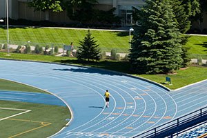

The Hart Equipment Room is located in the northeast corner of the Hart Building. Patrons with a valid I-card can rent sports equipment to use throughout the facilities as well as on the stadium. We rent basketballs, volleyballs, pickleballs, badminton, racquetball equipment, walleyball equipment, squash equipment, football, soccer, and frisbee. This is the location to rent uniforms for competitive sports, a semester locker, and ask about the pool schedule.

BYUI - Athletics
Important Links
Introduction
Athletic Activities develop individuals by instilling positive character traits through athletic recreation, competition, and leadership. Athletic Activities are offered in several ways: Events, Recreational leagues, Recreational facilities, and Competitive leagues.
Events
Short-term sporting events (tournaments, races, showcases, etc.). (Requires a commitment for the event timeline, typically completed in one day)
Recreational Leagues
Recreational Sports offers the opportunity for individuals to play organized sports in a recreational atmosphere within their campus community. They have the ability to recreate in a social environment, and have fun with fellow participants as they play a sport they are familiar with or learn new sport skills thereby enabling all to participate. Leagues are formatted for either team or individual competition. (Requires a commitment of 1 hour per week for the length of the season)
Recreational Facilities
Here's a short description about the recreational facilities that are available
- Equipment Room - Checkout equipment, reserve racquetball courts, and check the pool schedule.
- Hart Pool - Six lane, 25 yard pool with academic classes and open swims.
- Fitness Center - Work out gym ncludes a cardio section, free weights, and weight machines
- Courts and Fields -Multi-use fields and courts for Basketball, soccer, softball, and football.
- Bowling Center - Six lane Bowling Center open to students and the community.
- Game Center - Play Pool, Air Hockey, Foosball and Ping Pong.
- Roller Skating - On Monday and Saturday students and community patrons can come roller skate
- Ropes Course - A Climbing Tower, Giant Swing, and Team Develpoment Course for students and community.
Competitive Leagues
Competitive Sports is an integral part of the Student Activities Program. Student leaders for each Competitive Sport plan, develop, govern and administer that particular sport, with professional guidance from that sport’s Advisor. The key to the success of this program and each sport is student leadership, interest, involvement, and participation. (Requires a commitment of 6-10 hours per week for practices and competitions) Teams are determined through an open tryout. Players must attend the tryout(s) to be eligible for a team.
Equipment Room
Hart Pool

This 6 lane, 25 yard pool serves the BYU-Idaho campus with academic classes in swimming and lifeguarding and several Activities programs such as: water polo, swimming, battleship, water aerobics, kayak rolling, scuba certification and indoor triathalons.
Scheduling
Reservations for the pool may only be done for classes, academic groups or societies, and mutual or scout groups (please see the rules below). To reserve the pool for your group please contact the Scheduling Office:
- (208) 496-3120
- scheduling@byui.edu
- MC 191
Fitness Center
This is the workout gym for BYU-Idaho. This area includes a cardio section, circuit section, free weights, and weight machines. Those with a valid I-card are able to sign up for a free trainer to help them learn how to use the machines and exercise using proper technique.
Normal Hours:
5:00am - 11:30pm / Mon-Sat
Courts and Fields

The BYU-Idaho play fields are recreational areas on campus used for open recreation and often scheduled for competitive and recreational sports and other campus activities. The Sports Complex Fields, contain five artificial turf play fields. These fields are multi-use and can be used for soccer, softball, lacrosse, and ultimate frisbee. The Stadium Field consists of an outdoor track and an artificial turf used for football, frisbee, and soccer. The Upper Fields are natural grass and are used for campus dances, ward activities, and recreational sports including volleyball, frisbee, and flag football. Please use these fields to enhance your BYU-I experience.
The playfields are available for open recreation to BYU-Idaho students if not previously scheduled. To schedule a playfield please call the scheduling office at: (208) 496-3120. Map of Campus Playfields.
Field Rules:
- Please do not use grass fields immediately after heavy rain etc. so the fields are not damaged.
- Please do not enter fields that have the entry gate locked.
- BYU-Idaho dress and grooming standards apply.
- No unauthorized vehicles allowed on track and field.
- Fireworks or flammable materials are prohibited.
- No food, seeds, gum or colored drinks are allowed on field.
- No animals, golfing, or metal cleats.
- Fields are reserved for university use.
- Facilities are closed on Sundays.
Bowling Center
BYU-Idaho's Strike Zone is a Bowling Center open to students and the community. Bowling Classes are offered through the school's academic program. For information on the bowling leagues, go to the sports program of Student Activities. FHE reservations can be made day-of by going to the bowling center and signing up. Have fun bowling at the BYU-I Strike Zone!
Game Center
Located in the Manwaring Center between the Bowling Center and Freshens. Come relax with your friends and play Pool, Air Hockey, Foosball and Ping Pong or sit down to an assortment of board games. Open from 6:00 AM to 11:30 PM, enjoy these games at your convenience.
Roller Skating
BYU-Idaho provides an opportunity for students and community patrons to come to the Grand Ballroom to roller skate. This venue is available on Monday and Saturday nights. Whether a date, family home evening, or just your typical exercise program, come out and enjoy yourself!
Ropes Course
The Ropes Course may be scheduled in advance for a group of 8 or more, or you can buy individual tickets to an event. A session at the Ropes Course is a great way to get to know other people. At the Ropes Course you will play group games, work together to solve puzzles, and help one another conquer the climbing tower and giant swing. The Ropes Course provides opportunities for individuals and groups to learn skills like team building, problem-solving, support, trust, and unity.